Inserisci la password per accedere a questo case study.
Enter the password to access this case study.
Case study · 2023–2024 · Enterprise UX
Un ridisegno guidato dalla ricerca della piattaforma interna di monitoraggio video di BSB, usata dagli operatori di 14 concessionarie autostradali per gestire oltre 5.000 flussi live da telecamera.
A research-driven redesign of BSB's internal video-monitoring platform, used by operators across 14 motorway concessionaires to manage over 5,000 live camera streams.
01
Contesto & problemaContext & problem
La piattaforma di BSB era cresciuta in modo organico per oltre un decennio, ogni nuova funzione aggiunta alla struttura esistente senza un'architettura dell'informazione coerente. Gli operatori che gestivano migliaia di flussi simultanei navigavano interfacce dense e incoerenti, senza una gerarchia chiara.
La sfida non era solo visiva: il sistema non aveva un modello unificato delle relazioni tra flussi, telecamere, codec e nodi geografici. Gli utenti avevano sviluppato workaround complessi, schede del browser, fogli di calcolo, passaggi verbali, per compensare ciò che l'interfaccia non mostrava.
BSB's platform had grown organically over a decade, each new feature bolted onto the existing structure with no coherent information architecture. Operators managing thousands of simultaneous streams navigated dense, inconsistent interfaces with no clear hierarchy.
The challenge was not just visual: the system had no unified model of how streams, cameras, codecs and geographic nodes related. Users had built elaborate workarounds, browser tabs, spreadsheets, verbal handoffs, to compensate for what the interface couldn't show.
02
Ricerca & discoveryResearch & discovery
Le sessioni alternavano osservazione, co-design e validazione, con partecipanti da quattro ruoli: operatori di sala controllo, ingegneri di rete, responsabili regionali e amministratori di sistema.
Sessions alternated observation, co-design and validation, with participants from four roles: control-room operators, network engineers, regional managers and system administrators.
03
04
Ogni decisione è radicata in un comportamento osservato, validata tramite test di prototipo e bilanciata con i vincoli ingegneristici.
Each decision is grounded in observed behaviour, validated through prototype testing, and balanced against engineering constraints.
ProblemaProblem
{{ d.problem }}
Scelta di designDesign choice
{{ d.choice }}
MotivazioneRationale
{{ d.rationale }}
05
Il sistema ridisegnato è stato rilasciato nel Q1 2024, unificando la vista mappa e la lista flussi in un'unica interfaccia con default basati sul ruolo.
The redesigned system shipped in Q1 2024, consolidating the map view and stream list into a unified interface with role-based defaults.
Indagine su un flusso degradato: da 14 min a meno di 6 min nei test di usabilità.Investigating a degraded stream: from 14 min to under 6 min in usability testing.
Etichettatura incoerente sostituita da un unico modello a 5 stati.Inconsistent labelling replaced by a single 5-state model.
Operatori, ingegneri, manager e admin, con default adeguati al ruolo.Operators, engineers, managers and admins, with role-appropriate defaults.
06
Il ridisegno ha introdotto una libreria di componenti condivisa per navigazione, indicatori di stato, tabelle, overlay di mappa e pannelli di dettaglio, garantendo coerenza visiva e comportamentale, consegnata con specifiche annotate per breakpoint, stati e casi limite.
The redesign introduced a shared component library for navigation, status indicators, tables, map overlays and detail panels, ensuring visual and behavioural consistency, handed off with annotated specs for breakpoints, states and edge cases.
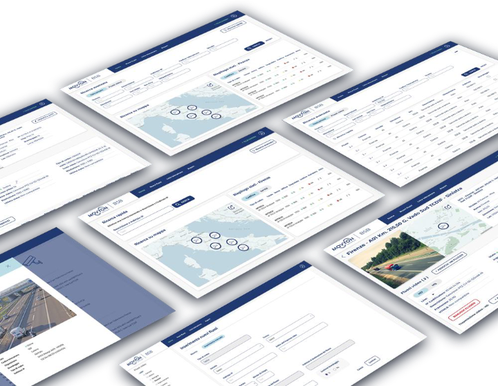
07
I test di usabilità confermano l'intento; i dati sul campo confermano il risultato. Queste sono le metriche che strumenterei nei primi 90 giorni post-lancio.
Usability testing confirms intent; field data confirms outcome. These are the metrics I'd instrument in the first 90 days post-launch.
{{ m.body }}
{{ m.target }}info@omaramato.com
© {{ year }} Antonino Omar Amato · Case study · Rete autostradale italianaCase study · Italy motorway network
Case study · 2024–2026 · Healthcare SaaS
La segretaria digitale all-in-one pensata per fisioterapisti e osteopati: agenda, pazienti e incassi in un'unica interfaccia.
The all-in-one digital secretary for physiotherapists and osteopaths: scheduling, patients and payments in a single interface.
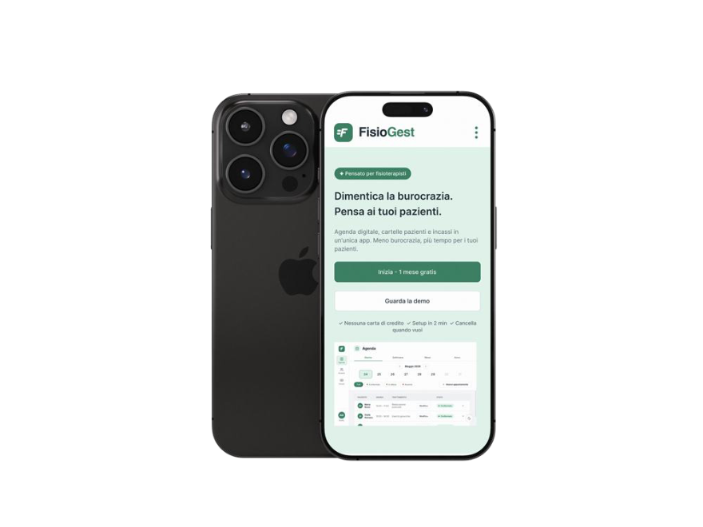
01
Contesto & problemaContext & problem
Fisioterapisti e osteopati freelance, studi che gestiscono tra 10 e 40 pazienti a settimana, lavorano ancora con metodi analogici o strumenti frammentati: agende cartacee, fogli Excel, promemoria mentali. Il risultato è circa un'ora al giorno persa in burocrazia e 2–3 sedute perse a settimana per mancati promemoria.
Freelance physiotherapists and osteopaths, practices managing 10 to 40 patients a week, still rely on analog methods or fragmented tools: paper agendas, spreadsheets, mental reminders. The result: about an hour a day lost to paperwork and 2–3 sessions lost weekly to missed reminders.
~1 ora/giorno in scartoffie~1 hour/day on paperwork
2–3 no-show a settimana2–3 no-shows per week
Fobia digitaleDigital phobia
Stress da memoriaMemory stress
02
Come l'intelligenza artificiale ha guidato ogni fase, dalla ricerca qualitativa ai componenti di produzione, senza mai rompere il loop. AI-in-the-loop a ogni stadio.
How artificial intelligence drove every phase, from qualitative research to production components, without ever breaking the loop. AI-in-the-loop at every stage.
{{ p.tool }}
{{ p.body }}
03
Un approccio metodico, costruito sulla comprensione profonda dei bisogni reali dei professionisti sanitari. 20 personas analizzate. Come Lead Product Designer ho guidato un team di 5 designer junior con una dashboard Kanban: retrospective e backlog review settimanali, documentazione raccolta nelle acceptance criteria delle user stories.
A methodical approach, built on deeply understanding the real needs of healthcare professionals. 20 personas analyzed. As Lead Product Designer I guided a team of 5 junior designers with a Kanban dashboard: weekly retrospectives and backlog reviews, documentation collected in the user stories' acceptance criteria.
{{ p.desc }}
04
Semplicità e gerarchia piatta: dall'accesso al dettaglio operativo in pochi livelli, così che ogni funzione sia raggiungibile senza perdersi.
Simplicity and a flat hierarchy: from access to operational detail in just a few levels, so every function is reachable without getting lost.
05
Task analizzato su 20 personas. L'obiettivo: completare la prenotazione in meno di 30 secondi, mentre si è al telefono con il paziente.
Task analyzed across 20 personas. The goal: complete a booking in under 30 seconds, while on the phone with the patient.
06
Come gli insight si sono tradotti in requisiti funzionali chiari.
How insights turned into clear functional requirements.
07
L'approccio Mobile-First permette ai terapisti di pianificare visite o inviare promemoria WhatsApp tra un paziente e l'altro, tagliando il tempo amministrativo fino all'80%.
The Mobile-First approach lets therapists schedule visits or send WhatsApp reminders between patients, cutting administrative time by up to 80%.
Slot liberi cliccabili direttamente nella vista giorno: niente più ricerca visiva.
Free slots become clickable straight in the day view, no more visual scanning.
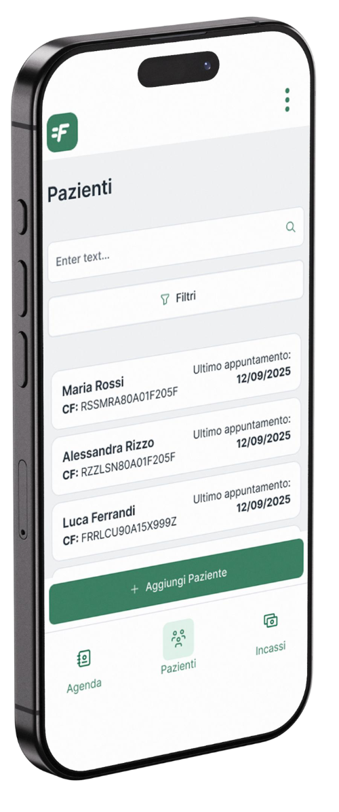
Card view per la massima scansionabilità e l'uso a una mano: l'essenziale in primo piano.
Card view for maximum scanability and one-handed use, the essentials up front.
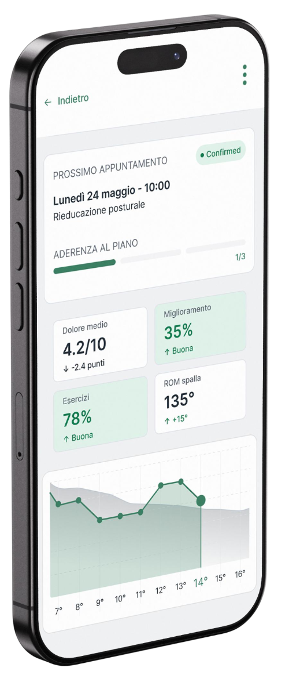
Scala VAS e indicatori di miglioramento per motivare il paziente e l'aderenza alla terapia.
VAS scale and improvement indicators to boost patient motivation and therapy adherence.
{{ m.body }}
{{ u.body }}
08
Una cartella clinica proattiva, Mobile-First, che centralizza storia clinica, documenti e monitoraggio in un'interfaccia fluida, massima flessibilità tra studio e reception.
A proactive, Mobile-First medical record that centralizes history, documents and monitoring in a smooth interface, maximum flexibility between office and reception.
{{ p.tag }}
{{ p.body }}
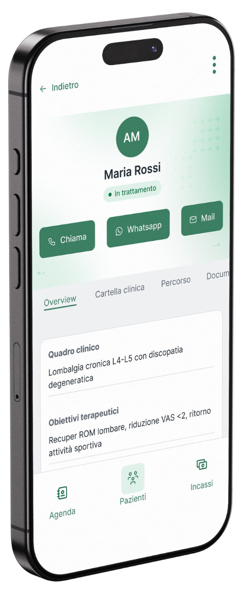
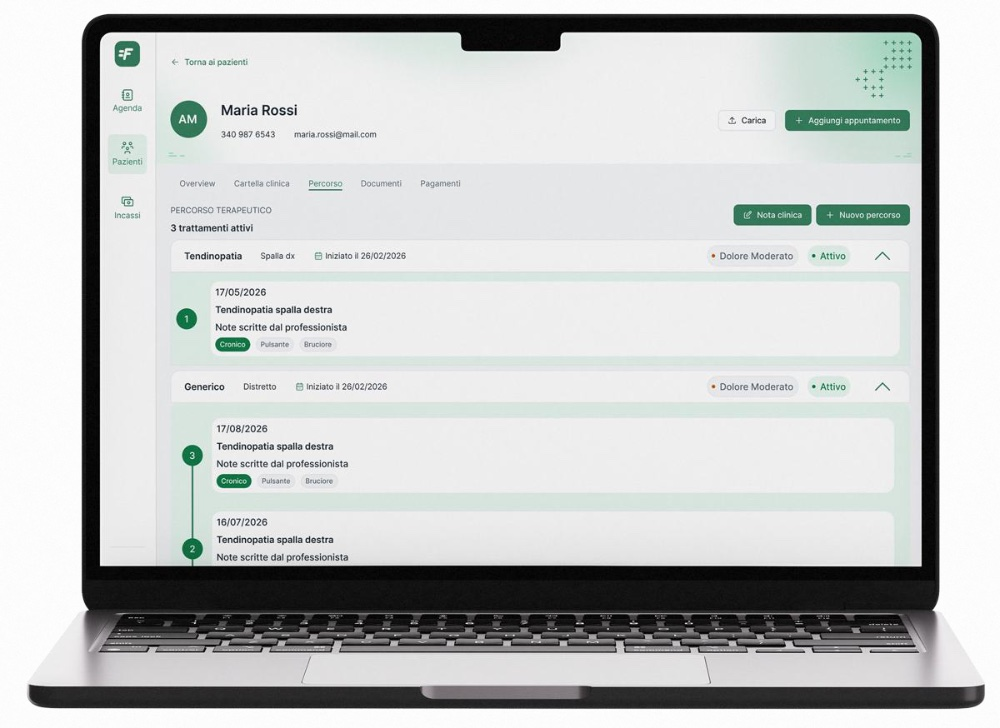
Aree corporee gestite come percorsi terapeutici indipendenti. Il diario clinico usa la Progressive Disclosure: l'ultima seduta è espansa, lo storico resta accessibile ma ordinato.Body areas managed as independent therapeutic paths. The clinical diary uses Progressive Disclosure: the latest session is expanded, history stays accessible yet organized.
09
Il modulo Incassi trasforma la gestione economica da onere manuale ad assistente digitale proattivo, riducendo l'ansia amministrativa: monitoraggio in tempo reale di pagamenti in sospeso e incassi, su una dashboard ad alto contrasto.
The Revenue module turns financial management from a manual burden into a proactive digital assistant, cutting admin anxiety: real-time monitoring of pending payments and earnings on a high-contrast dashboard.
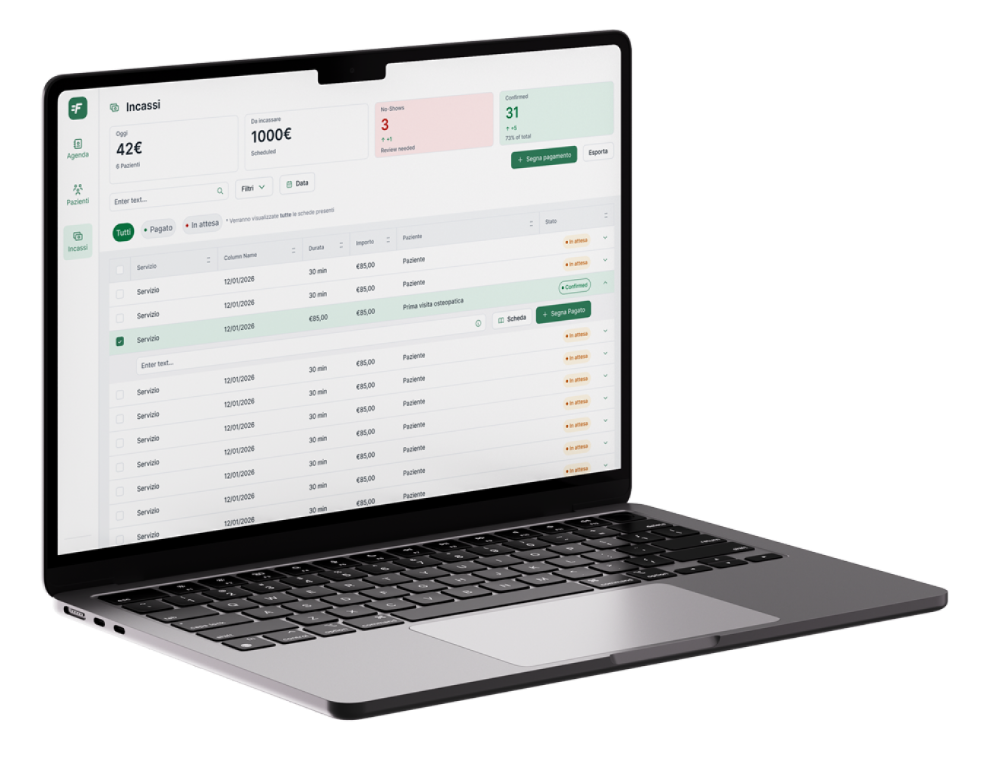
{{ r.body }}
10
L'evoluzione iterativa del prodotto, in tre cicli.
The product's iterative evolution, in three cycles.
11
Dati concreti su come FisioGest trasforma la gestione clinica quotidiana. Obiettivi basati su ricerca qualitativa e quantitativa con professionisti del settore.
Concrete data on how FisioGest transforms daily clinical management. Targets based on qualitative and quantitative research with industry professionals.
12
La fondazione del prodotto, libreria UI, design token e principi di accessibilità. Costruito su Tailwind CSS v4 e Shadcn UI con tipografia Inter, base 8px e conformità WCAG 2.1 AA.
The product foundation, UI library, design tokens and accessibility principles. Built on Tailwind CSS v4 and Shadcn UI with Inter typography, 8px base and WCAG 2.1 AA compliance.
Color Tokens
Buttons, States
Primary · radius 8 · h40
Secondary · Outlined
Ghost · Text
Typography Scale · Inter
Status Badges
Input Fields
Accessibilità · Indicatori Alfa (H/M/L)Accessibility · Alpha indicators (H/M/L)
Indicatori testuali H/M/L integrati nella scala colore della pain map, leggibilità garantita anche per utenti daltonici. Colore + testo, daltonismo-safe.
Alphabetical H/M/L indicators integrated into the pain-map colour scale, readable for colorblind users too. Colour + text, colorblind-safe.
Mobile · Bottom Tab Bar
Touch target 46px · active bg brand/primary-soft
Breadcrumbs · Desktop
Foundations
info@omaramato.com
© {{ year }} Antonino Omar Amato · FisioGest, SaaS per la gestione clinicaClinical management SaaS
Inserisci la password per accedere a questo case study.
Enter the password to access this case study.
01
Contesto & problemaContext & problem
Pale e mozzi delle turbine eoliche sono prodotti con materiali compositi la cui composizione esatta raramente sopravvive alla produzione. Quando i componenti arrivano agli impianti di riciclo, gli operatori non hanno alcuna visibilità su composizione, tolleranze di produzione o storico di manutenzione.
Recuperare i dati richiedeva una ricerca manuale tra export MES scollegati, registri cartacei e contatti dei fornitori, un processo che richiedeva giorni, non minuti, bloccando sia la conformità alla marcatura CE sia il recupero dei materiali a fine vita.
Wind turbine blades and hubs are manufactured from composite materials whose exact composition rarely survives production. When components reach recycling facilities, operators have no visibility into material makeup, production tolerances, or maintenance history.
Retrieving product data required manual lookup across disconnected MES exports, paper records, and supplier contacts, a process taking days rather than minutes, blocking both CE-marking compliance and end-of-life material recovery.
tempo medio di ricerca dei dati di prodottoaverage lookup time for product data
processo senza un'unica fonte di veritàprocess with no single source of truth
02
«Adesso, se arriva una pala e ci serve la specifica del materiale, scrivo a tre persone diverse e aspetto due giorni. Quando arriva la risposta, la finestra per il riciclo si è già spostata.»
"Right now, if a blade arrives and we need its material spec, I'm emailing three different people and waiting two days. By the time we have the answer, the recycling window has moved."
{{ f.body }}
03
Architettura dell'informazioneInformation architecture
Il modello di navigazione è stato validato con gli ingegneri AMRC in sessioni di co-design: ogni livello mappa qualcosa che un tecnico può indicare sulla turbina reale.
The navigation model was validated with AMRC engineers in co-design sessions, every level maps to something a field technician can point to on the actual turbine.
Principio di design: ogni decisione di navigazione deve poter rispondere alla domanda «dove si troverebbe fisicamente questo componente?»Design principle: every navigation decision should be answerable by asking "where would this component be physically located?"
04
{{ m.body }}
05
ProblemaProblem
{{ d.problem }}
Scelta di designDesign choice
{{ d.choice }}
MotivazioneRationale
{{ d.rationale }}
06
Queste sono intenzioni di design: il progetto è stato consegnato come prototipo e MVP co-progettato. I risultati sono ancora da misurare su scala.
These are design intentions, the project was delivered as a prototype and co-designed MVP. Outcomes are yet to be measured at scale.
{{ g.tag }}
{{ g.body }}
© {{ year }} Antonino Omar Amato · Rekord, Co-design con AMRCCo-design with AMRC
Inserisci la password per accedere a questo case study.
Enter the password to access this case study.
Case study · 2024 · Mobilità · EnterpriseMobility · Enterprise
Riprogettazione user-centered del sistema di gestione delle informazioni autostradali di ASPI, dalla dashboard olistica a un sinottico ispirato alle mappe metro.
User-centered redesign of ASPI's highway information management system, from a holistic dashboard to a metro-map-inspired synoptic.
La dashboard olistica a widget: l'intero tronco autostradale in un colpo d'occhio. Allarmi, eventi, soccorsi, cantieri e mappa in un'unica vista, senza più finestre del browser disposte a mosaico.The holistic widget dashboard: the whole motorway trunk at a glance. Alarms, events, rescue, roadworks and map in a single view, with no more tiled browser windows.
01
Contesto & problemaContext & problem
Il progetto nasce dalla collaborazione tra Movyon e Autostrade per l'Italia, con il supporto consulenziale di BCG e PwC. Come design consultant per Movyon, ho riprogettato il sistema di gestione delle informazioni stradali con un solo obiettivo: migliorarne usabilità ed efficacia operativa per gli operatori delle sale radio.
The project comes from the collaboration between Movyon and Autostrade per l'Italia, with advisory support from BCG and PwC. As a design consultant for Movyon, I redesigned the road information management system with a single goal: improving its usability and operational effectiveness for radio-room operators.
{{ p.body }}
02
Dai primi incontri di Firenze, con tutte le parti coinvolte attorno allo stesso tavolo, abbiamo adottato una metodologia user-centered per la raccolta dei requisiti e la progettazione, ponendo gli operatori al centro di ogni decisione.
From the first meetings in Florence, with every stakeholder around the same table, we adopted a user-centered methodology for requirements and design, putting operators at the center of every decision.
{{ p.body }}
03
Interviste semi-strutturate, wireframe disegnati alla lavagna durante gli incontri e prototipi in Adobe XD testati nel meeting successivo. Ogni giro restituisce un miglioramento tangibile.
Semi-structured interviews, wireframes sketched on whiteboards during meetings, and Adobe XD prototypes tested in the next session. Every loop returns a tangible improvement.
{{ s.desc }}
04
La ricerca ha mappato il nucleo funzionale del sistema: 14 categorie, ognuna con le proprie esigenze di visualizzazione tra listati, sinottici e grafici di KPI.
Research mapped the functional core of the system: 14 categories, each with its own visualization needs across lists, synoptics and KPI charts.
05
Dai brainstorming è emerso un bisogno chiaro: associare liste e dati a qualcosa di più intuitivo e immersivo. È nato così un grande sinottico ispirato alle linee metropolitane di Londra e New York, l'innovazione che ha ridefinito la gestione visiva delle informazioni stradali.
From the brainstorms a clear need emerged: pairing lists and data with something more intuitive and immersive. That gave birth to a large synoptic inspired by the London and New York metro lines, the innovation that redefined the visual handling of road information.
Sinottico · vista geografica della reteSynoptic · geographic network view
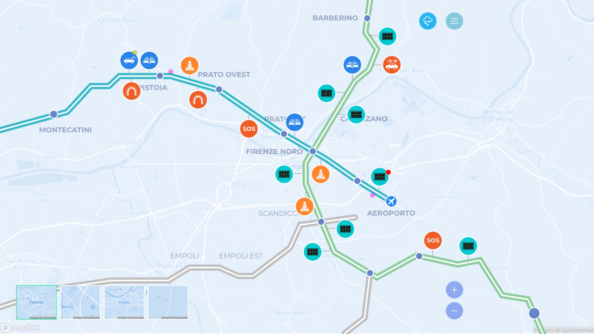
Sinottico PMV · A01 Milano–NapoliPMV synoptic · A01 Milano–Napoli
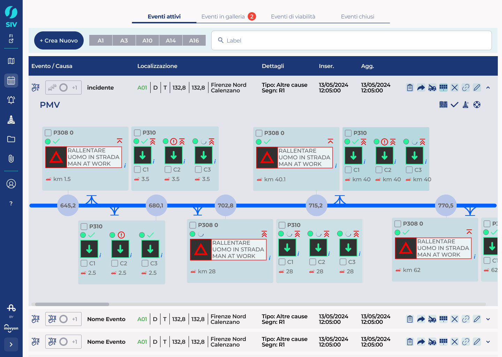
Le informazioni disposte lungo la linea, come fermate su una mappa metro.Information laid out along the line, like stops on a metro map.
Supporta operatori abituati a ragionare per geografia, non per tabelle.Supports operators used to thinking by geography, not tables.
Segni visivi riconoscibili a colpo d'occhio per le situazioni critiche.At-a-glance visual cues for critical situations.
06
In fase di sviluppo, con un team scrum, il design dell'interfaccia si è concentrato su tre stream prioritari: Eventi, Cantieri e Allarmi.
In the development phase, with a scrum team, interface design focused on three priority streams: Events, Roadworks and Alarms.
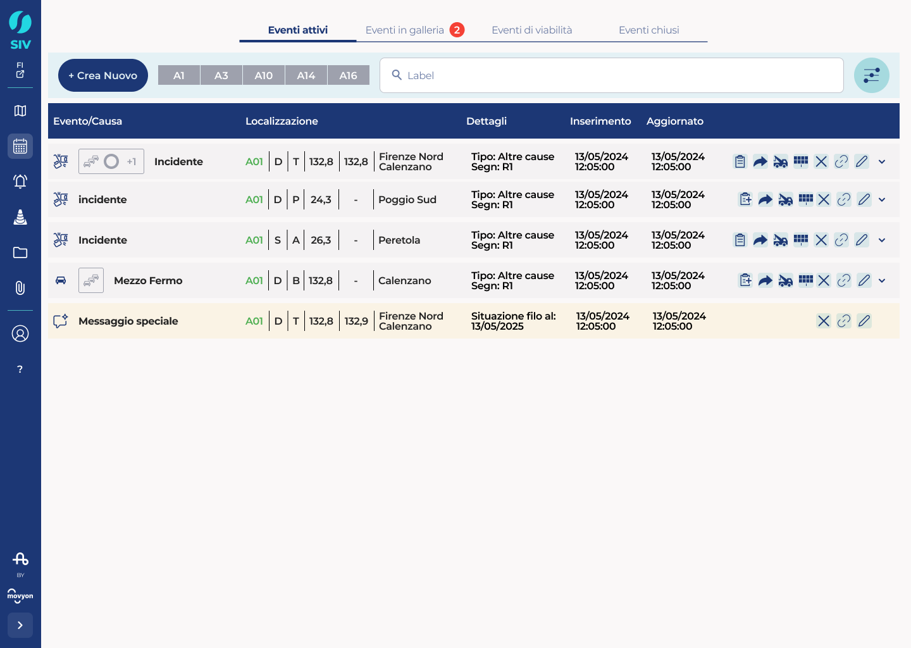
Stream · EventiStream · Events
Listato gerarchico di eventi e cause, con localizzazione chilometrica, stato e azioni rapide in riga.Hierarchical list of events and causes, with kilometric location, status and quick in-row actions.
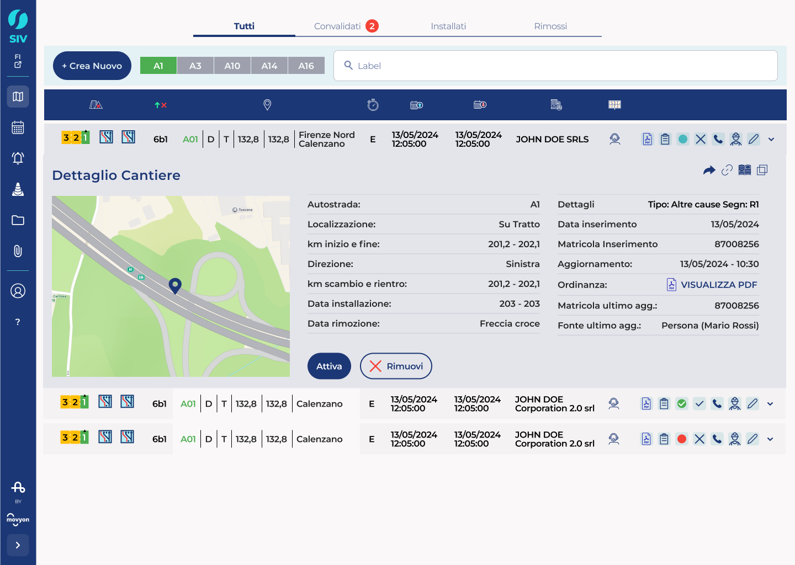
Stream · CantieriStream · Roadworks
Dettaglio cantiere con mappa, direzione, km di scambio e rientro, ordinanza e stato di installazione.Roadwork detail with map, direction, swap and return km, ordinance and installation status.
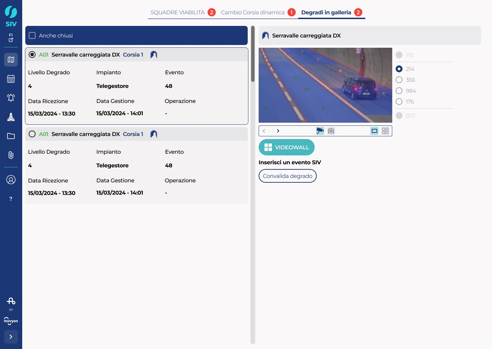
Stream · AllarmiStream · Alarms
Gestione allarmi per galleria con video live e chip d'azione per inserire o chiudere un evento SIV.Per-tunnel alarm handling with live video and action chips to open or close a SIV event.
07
Standard WCAG ai livelli AA e AAA per tipografia, colori e contrasti, perché il sistema sia leggibile anche in condizioni di stress o scarsa illuminazione. Il tutto sul design system di Movyon, costruito su griglia base 8px.
WCAG standards at AA and AAA levels for typography, colors and contrast, so the system stays readable even under stress or poor lighting. All built on Movyon's design system, on an 8px base grid.
Approccio atomicoAtomic approach
WCAG
Specifiche & strumentiSpecs & tools
08
Il processo di design è stato integrato nel flusso scrum: mentre il design avanza sull'interfaccia, gli sviluppatori lavorano su debito tecnico e code review. Due ritmi che si rafforzano a vicenda.
The design process was woven into the scrum flow: while design moves ahead on the interface, developers work on technical debt and code review. Two rhythms that reinforce each other.
{{ b.body }}
09
L'approccio user-centered e il processo iterativo hanno prodotto miglioramenti oggettivi nelle metriche di usabilità.
The user-centered approach and the iterative process produced objective improvements in usability metrics.
{{ r.note }}
© {{ year }} Antonino Omar Amato · SIV, Ammodernamento per ASPI × MovyonModernization for ASPI × Movyon